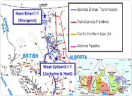
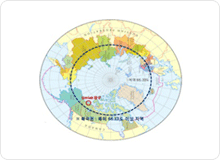
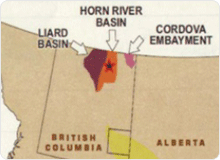
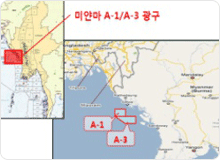
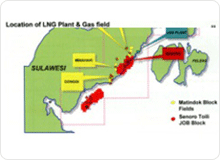
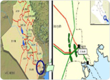
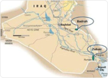
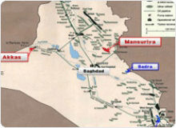
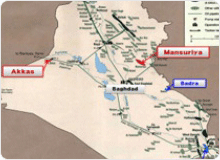
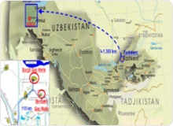

해외자원 개발·생산 사업
-

캐나다 혼리버/웨스트 컷뱅크 개발 사업
- 참여구조:엔카나(EnCana)사가 보유한 캐나다 브리티시컬럼비아 주 혼리버 지역의
키위가나 광구와 웨스트컷뱅크 지역의 잭파인 및 노엘 광구에 50% 지분참여 - 사업형태:공동투자를 통한 공동 운영
- 참여사(지분):엔카나(50%), 공사(50%)
- 가스타입:세일가스(혼리버), 치밀가스(웨스트 컷 뱅크)
- 참여구조:엔카나(EnCana)사가 보유한 캐나다 브리티시컬럼비아 주 혼리버 지역의
-

캐나다 북극권 우미악 광구 개발사업
- 사업명:캐나다 북극 우미악(Umiak) 광구 개발사업
- 참여구조:북극권에 위치한 MGM사 소유의 우미악 광구 지분 매입 후,
천연가스 개발생산 - 위치 : 캐나다 Northwest주 이누빅(Inuvik)시 북서쪽 약 115km,
북극권 (북위 약 69.4도) 매켄지델타 지역 - 북극권 : 북위 66도 33분 이북 지역을 북극권역으로 통칭함
- 참여사(지분) : 공사(20%), MGM(40%), 코노코필립스(40%)
-

캐나다 코르도바 광구 개발 사업
- 사업구조 : 캐나다 서부 브리티시 컬럼비아주 Cordova 지역의 가스전을 소유하고
있는 CGR(Cordova Gas Resource)사의 지분 10% 매입 - 광구명 : Cordova
- 가스타입 : 셰일가스
- 위치 : 캐나다 BC주 북동부
- 참여사(지분) : PennWest사 50%,CGR사 50%
※ CGR사 지분: 공사(10%), 미쯔비시(60%) ,JOGMEC, 추부전력, 오사카가스,
도쿄가스(각 7.5%)
- 사업구조 : 캐나다 서부 브리티시 컬럼비아주 Cordova 지역의 가스전을 소유하고
-

미얀마 A-1/A-3 개발사업
- 위치 : 미얀마 북서부 해상
- 탐사기간: 2000. 10 ~ 2011. 10
- 생산기간 : 2013. 07 ~ 2038 (25년)
- 지분구성
지분구성 A-1/A-3광구 및 해저배관 대우(51%, 운영사), KOGAS(8.5%), MOGE(15%), OVL(17%), GAIL(8.5%) 육성배관(SEAGP) CNPC(50.9%), 대우(25.04%), KOGAS(4.17%), MOGE(7.37%), OVL(8.35%), GAIL(4.17%)
-

인니 DSLNG 프로젝트(상류)
- 위치 : 인니 Sulawesi섬 동쪽
- 계약형태 : 생산물분배계약(Senoro-Toili PSC)
- 계약기간 : 1997 ~ 2027(30년)
- 지분구조 : Pertamina(50%), Medco(30%), Tomori E&P Limited(20%)
※ Tomori E&P Limited : 미쯔비시(51%), 가스공사 (49%)
-

이라크 주바이르 유전 개발 · 생산사업
- 계약형태 : 기술서비스 계약(계약기간 : 25년+5년 연장 가능)
- 매장량 : 원시부존량 247억배럴
- 생산량 : 총 65억 배럴(25년 생산기간 중 최소 12년간은 일산 85만 배럴 이상)
- 계약 참여사 : 공사(23.75%), ENI(이탈리아, 41.56%),
Occidental(미국, 29.69%), Missan Oil Company(5%,이라크 국영회사) - 가스공사 투자지분 : 25% (이라크 국영회사 지분 5%에 대한 공사 대납분 포함)
- 광구면적 : 면적 900㎢(서울시 면적 1.5배) / 이라크 바스라 남서쪽 20km 위치
-

이라크 바드라 유전 개발 · 생산사업
- 계약형태 : 기술서비스 계약(계약기간 : 20년 + 5년 연장 가능)
- 생산량 : 총 8억 배럴 (20년 생산기간 중 최소 7년간은 일산 17만 배럴 이상)
- 참여사 :공사(22.5%), Gazprom Neft(러시아, 운영사 30%), Petronas Carigali
(말련, 15%), TPAO(터키, 7.5%), Oil Exploration Company(이라크
국영회사, 25%) - 가스공사 투자지분 : 30% (이라크 국영회사 지분 25%에 대한 공사 대납분 포함)
- 광구면적 : 면적 100㎢/ 이라크 바그다드 동쪽(이란과의 국경부근)
-

이라크 만수리야 가스전 개발 · 생산사업
- 계약형태 : 기술서비스 계약(계약기간 : 20년 + 5년 연장 가능)
- 생산량 : 약 1.68Tcf(일일생산량 320mmscf을 13년 이상 생산)
- 계약 참여사 : 공사(15%), TPAO(터키, 37.5%), Kuwait Energy Company
(쿠웨이트, 22.5%), Oil Exploration Company(이라크 국영회사,
25%) - 투자지분 : 20% (이라크 국영회사 지분 25%에 대한 공사 대납분 포함)
- 광구면적 : 면적 200㎢/ 이라크 바그다드 북동쪽 약 100㎞ 디얄라주
-

이라크 아카스 가스전 개발 · 생산사업
- 계약형태 : 기술서비스 계약 (계약기간 : 20년 + 5년 연장 가능)
- 생산량 : 약 2.1Tcf(20년간 생산기간 중 최소 13년간 일산 400 MMtcf 이상)
- 계약 참여사 : 공사(75%), NOC(North Oil Company, 이라크 국영회사, 25%)
- 투자지분 : 100%(이라크 국영회사 지분 25%에 대한 공사 대납분 포함)
- 광구면적 : 면적 850㎢/ 이라크 서부 안바르주 시리아 국경근처
-

우즈베키스탄 수르길 가스전 개발 및 GAS Chemical
- 가스전을 우즈벡국영석유가스공사(Uzbekneftegaz)와 공동개발, 생산가스 판매, 가스화학 플랜트 건설·운영을 통한 화학 제품(HDPE·PP) 판매
- 판매물량 : 천연가스 4.5BCM/년, HDPE 38만톤, PP 8만톤
- 합작회사(Uz-Kor Gas Chemical) 지분율 : 한국컨소시엄(50%),
Uxbekneftegaz(50%)
※ 한국컨소시엄 : 가스공사 (22.5%), 롯데캐미컬(24.5%), STX 에너지(3%)